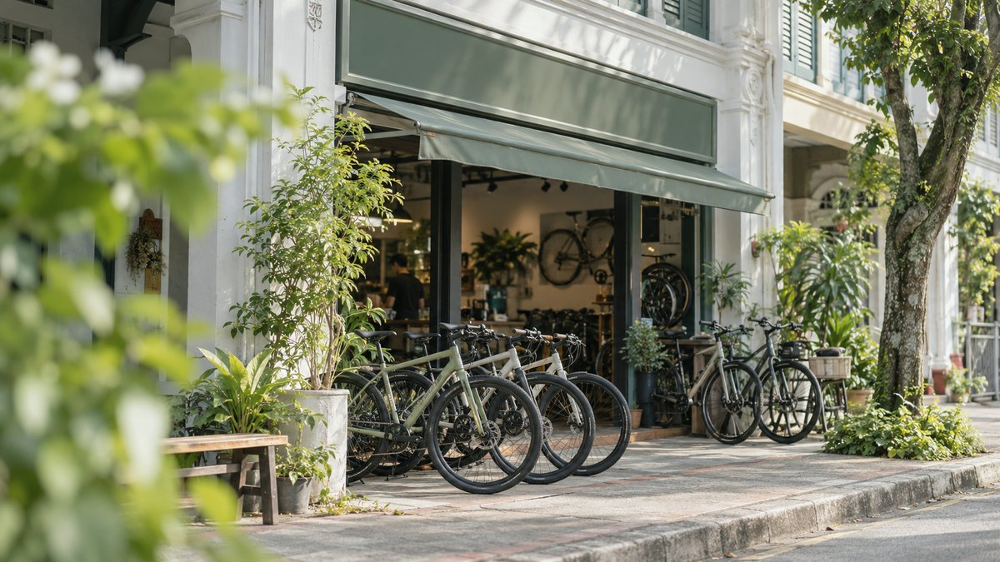

Loop Cycles · Bukit Timah
Trek Marlin 7
Hardtail · 29" wheels · frame MPhotos of this bike
Taken by Loop Cycles on Wed 22 Oct. This exact bike, not a catalogue picture.
Loop CyclesSet up for you before delivery
From your fit: 176 cm, inside leg 81 cm.
Edit fit
- 1Saddle 72 cmSet from your 81 cm inside leg. Your knee keeps a slight bend.
- 2Fork sag 25%Softer for your first ride on dirt.
- 3Bars +1 cmOne spacer under the stem, so you sit a little more upright.
72 cmSaddle
25%Fork sag
+1 cmBars
To Chestnut Nature Park, Sat 25 Oct, 7:40. Set up at Loop Cycles before it leaves, so you ride straight away.
S$53 all-in for Sat 25 Oct
Everything you pay. Nothing is added at checkout.- Rental, 1 day
- S$38
- Delivery and collection
- S$12
- Service
- S$3
- Total
- S$53
Plus a S$150 deposit, held on your card and refunded when the bike is back.